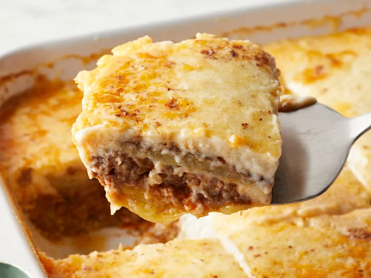

Moussaka

Description
This is also a good dish I wish to try in the future, since I don't really have time to invest in making the dish at the moment. However, I put the recipe below if anyone of you want to have a taste of it at home. Enjoy!
Ingredients
- 3 eggplants, peeled and cut lengthwise into 1/2 inch thick slices
- Salt to taste
- ¼ cup olive oil
- 1 tablespoon butter
- 1 pound lean ground beef
- 2 onions, chopped
- 1 clove garlic, minced
- Ground black pepper to taste
- 2 tablespoons dried parsley
- ½ teaspoon fines herbs
- ¼ teaspoon ground cinnamon
- ½ teaspoon ground nutmeg, divided
- 1 (8 ounce) can tomato sauce
- ½ cup red wine
- 1 egg, beaten
- 4 cups milk
- ½ cup butter
- 6 tablespoons all-purpose flour
- Ground white pepper, to taste
- 1 ½ cups freshly grated Parmesan cheese